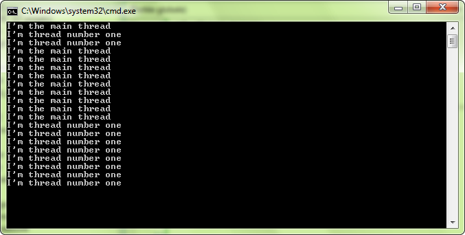
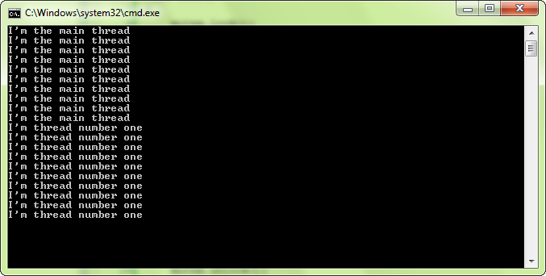

Большинство из вас уже должны знать, что такое поток, однако вот небольшое пояснение для тех, кто действительно плохо знаком с этой концепцией.
Поток — это в основном последовательность инструкций, которые выполняются параллельно с другими потоками. Каждая программа состоит как минимум из одного потока: основного, который запускает вашу функцию main(). Программы, которые используют только основной поток, являются однопоточными, если вы добавите один или несколько потоков, они станут многопоточными.
Короче говоря, потоки — это способ делать несколько вещей одновременно. Это может быть полезно, например, для отображения анимации и реагирования на действия пользователя при загрузке изображений или звуков. Потоки также широко используются в сетевом программировании для ожидания получения данных, продолжая обновлять и рисовать приложение.
В своей новейшей версии (2011 г.) стандартная библиотека C++ предоставляет набор классов для многопоточности. В то время, когда был написан SFML, стандарт C++11 еще не был написан, и не было стандартного способа создания потоков. Когда был выпущен SFML 2.0, многие компиляторы еще не поддерживали этот новый стандарт.
Если вы работаете с компиляторами, поддерживающими новый стандарт и его заголовок <thread>, забудьте о классах потоков SFML и используйте вместо них его — так будет намного лучше. Но если вы работаете с компилятором, выпущенным до 2011 года, или планируете распространять свой код и хотите, чтобы он был полностью переносимым, классы потоков SFML — хорошее решение.
Хватит разговоров, давайте посмотрим код. Класс, позволяющий создавать потоки в SFML, называется sf::Thread, и вот как он выглядит в действии:
#include <SFML/System.hpp>
#include <iostream>
void func()
{
// this function is started when thread.launch() is called
for (int i = 0; i < 10; ++i)
std::cout << "I'm thread number one" << std::endl;
}
int main()
{
// create a thread with func() as entry point
sf::Thread thread(&func);
// run it
thread.launch();
// the main thread continues to run...
for (int i = 0; i < 10; ++i)
std::cout << "I'm the main thread" << std::endl;
return 0;
}
В этом коде и main, и func запускаются параллельно после вызова thread.launch(). В результате текст из обеих функций должен смешиваться в консоли.
Точка входа потока, т.е. функция, которая будет выполняться при запуске потока, должна быть передана конструктору sf::Thread. sf::Thread старается быть гибким и принимает широкий спектр точек входа: функции, не являющиеся членами, или функции-члены, с аргументами или без них, функторы и т. д. В приведенном выше примере показано, как использовать функцию, не являющуюся членом, вот некоторые из них. другие примеры.
-Функция, не являющаяся членом, с одним аргументом:
void func(int x)
{
}
sf::Thread thread(&func, 5);
-Функция члена:
class MyClass
{
public:
void func()
{
}
};
MyClass object;
sf::Thread thread(&MyClass::func, &object);
-Функтор (функция-объект):
struct MyFunctor
{
void operator()()
{
}
};
sf::Thread thread(MyFunctor());
Последний пример, в котором используются функторы, является наиболее мощным, поскольку он может принимать функторы любого типа и, следовательно, делает sf::Thread совместимым со многими типами функций, которые напрямую не поддерживаются. Эта функция особенно интересна для лямбда-выражений C++11 или std::bind.
// with lambdas
sf::Thread thread([](){
std::cout << "I am in thread!" << std::endl;
});
// with std::bind
void func(std::string, int, double)
{
}
sf::Thread thread(std::bind(&func, "hello", 24, 0.5));
Если вы хотите использовать sf::Thread внутри класса, не забывайте, что у него нет конструктора по умолчанию. Поэтому вы должны инициализировать его непосредственно в списке инициализации конструктора:
class ClassWithThread
{
public:
ClassWithThread():m_thread(&ClassWithThread::f, this)
{
}
private:
void f()
{
...
}
sf::Thread m_thread;
};
Если вам действительно нужно создать экземпляр sf::Thread после создания объекта-владельца, вы также можете отложить его создание, динамически выделив его в куче.
После того, как вы создали экземпляр sf::Thread, вы должны запустить его с помощью функции запуска.
sf::Thread thread(&func);
thread.launch();
launch вызывает функцию, которую вы передали конструктору в новом потоке, и немедленно возвращает значение, чтобы вызывающий поток мог продолжить работу.
Поток автоматически останавливается, когда его функция точки входа возвращается. Если вы хотите дождаться завершения потока из другого потока, вы можете вызвать его функцию ожидания.
sf::Thread thread(&func);
// start the thread
thread.launch();
...
// block execution until the thread is finished
thread.wait();
Функция ожидания также неявно вызывается деструктором sf::Thread, так что поток не может оставаться в живых (и выйти из-под контроля) после уничтожения экземпляра его владельца sf::Thread. Помните об этом, когда будете управлять своими потоками (см. последний раздел этого руководства).
В sf::Thread нет функции, позволяющей другому потоку приостановить его, единственный способ приостановить поток — сделать это из кода, который он выполняет. Другими словами, вы можете только приостановить текущий поток. Для этого вы можете вызвать функцию sf::sleep:
void func()
{
...
sf::sleep(sf::milliseconds(10));
...
}
sf::sleep имеет один аргумент — время сна. Эта продолжительность может быть задана с любой единицей измерения/точностью.
Обратите внимание, что с помощью этой функции вы можете перевести в спящий режим любой поток, даже основной.
sf::sleep — самый эффективный способ приостановить поток: пока поток спит, он не требует ЦП. Паузы, основанные на активном ожидании, такие как пустые циклы while, будут потреблять 100% ЦП только для того, чтобы делать... ничего. Однако имейте в виду, что продолжительность сна — это всего лишь подсказка, в зависимости от ОС она будет более или менее точной. Так что не полагайтесь на него для очень точного времени.
Все потоки в программе используют одну и ту же память, они имеют доступ ко всем переменным в той области видимости, в которой они находятся. Это очень удобно, но и опасно: поскольку потоки выполняются параллельно, это означает, что переменная или функция могут использоваться одновременно из несколько потоков одновременно. Если операция не является потокобезопасной, она может привести к неопределенному поведению (т. е. к сбою или повреждению данных).
Существует несколько инструментов программирования, помогающих защитить общие данные и сделать ваш код потокобезопасным. Они называются примитивами синхронизации. Распространенными являются мьютексы, семафоры, условные переменные и спин-блокировки. Все они являются вариантами одной и той же концепции: они защищают фрагмент кода, разрешая доступ к нему только определенным потокам и блокируя другие.
Самым основным (и используемым) примитивом является мьютекс. Мьютекс означает «ВЗАИМНОЕ ИСКЛЮЧЕНИЕ»: он гарантирует, что только один поток сможет запустить код, который он охраняет. Давайте посмотрим, как они могут навести порядок в примере выше:
#include <SFML/System.hpp>
#include <iostream>
sf::Mutex mutex;
void func()
{
mutex.lock();
for (int i = 0; i < 10; ++i)
std::cout << "I'm thread number one" << std::endl;
mutex.unlock();
}
int main()
{
sf::Thread thread(&func);
thread.launch();
mutex.lock();
for (int i = 0; i < 10; ++i)
std::cout << "I'm the main thread" << std::endl;
mutex.unlock();
return 0;
}
Этот код использует общий ресурс (std::cout) и, как мы видели, приводит к нежелательным результатам — в консоли все смешано. Чтобы убедиться, что полные строки печатаются правильно, а не смешиваются случайным образом, мы защищаем соответствующую область кода с помощью мьютекса.
Первый поток, который достигает своей строки mutex.lock(), успешно блокирует мьютекс, напрямую получает доступ к следующему коду и печатает его текст. Когда другой поток достигает своей строки mutex.lock(), мьютекс уже заблокирован, и, таким образом, поток переходит в спящий режим (подобно sf::sleep, спящий поток не потребляет процессорное время). Когда первый поток, наконец, разблокирует мьютекс, пробуждается второй поток, которому разрешается заблокировать мьютекс и также распечатать его текстовый блок. Это приводит к тому, что строки текста отображаются в консоли последовательно, а не смешиваются.
Мьютексы — не единственный примитив, который можно использовать для защиты общих переменных, но в большинстве случаев этого должно быть достаточно. Однако, если ваше приложение делает сложные вещи с потоками, и вам кажется, что этого недостаточно, не стесняйтесь искать настоящую библиотеку потоков с большим количеством функций.
Не беспокойтесь: мьютексы уже потокобезопасны, их не нужно защищать. Но они не безопасны для исключений! Что произойдет, если возникнет исключение, когда мьютекс заблокирован? У него никогда не будет шанса быть разблокированным, и он останется заблокированным навсегда. Все потоки, которые попытаются заблокировать его в будущем, будут заблокированы навсегда, а в некоторых случаях все ваше приложение может зависнуть. Довольно плохой результат.
Чтобы убедиться, что мьютексы всегда разблокированы в среде, где могут быть выброшены исключения, SFML предоставляет класс RAII для их обертывания: sf::Lock. Он блокирует мьютекс в своем конструкторе и разблокирует его в своем деструкторе. Просто и эффективно.
sf::Mutex mutex;
void func()
{
sf::Lock lock(mutex); // mutex.lock()
functionThatMightThrowAnException(); // mutex.unlock() if this function throws
} // mutex.unlock()
Обратите внимание, что sf::Lock также может быть полезен в функции с несколькими операторами возврата.
sf::Mutex mutex;
bool func()
{
sf::Lock lock(mutex); // mutex.lock()
if (!image1.loadFromFile("..."))
return false; // mutex.unlock()
if (!image2.loadFromFile("..."))
return false; // mutex.unlock()
if (!image3.loadFromFile("..."))
return false; // mutex.unlock()
return true;
} // mutex.unlock()
Одна вещь, которую часто упускают из виду программисты, заключается в том, что поток не может существовать без соответствующего экземпляра sf::Thread. На форумах часто можно увидеть следующий код:
void startThread()
{
sf::Thread thread(&funcToRunInThread);
thread.launch();
}
{
startThread();
// ...
return 0;
}
Программисты, которые пишут код такого типа, ожидают, что функция startThread() запустит поток, который будет жить сам по себе и будет уничтожен, когда функция с потоком завершится. Это не то, что происходит. Потоковая функция блокирует основной поток, как будто этот поток не работает.
Какова причина этого? Экземпляр sf::Thread является локальным для функции startThread() и поэтому немедленно уничтожается, когда функция возвращается. Вызывается деструктор sf::Thread, который вызывает функцию wait(), как мы узнали выше, и в результате основной поток блокируется и ожидает завершения потоковой функции вместо того, чтобы продолжать выполняться параллельно.
Так что не забывайте: вы должны управлять своим экземпляром sf::Thread так, чтобы он существовал до тех пор, пока должна выполняться потоковая функция.